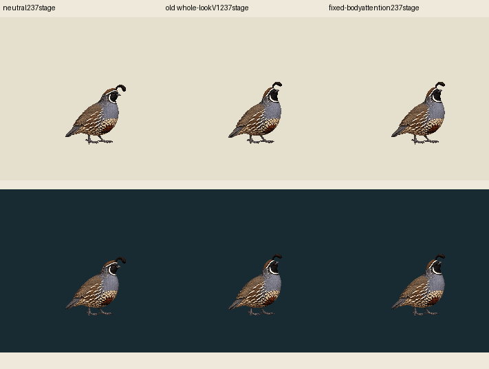
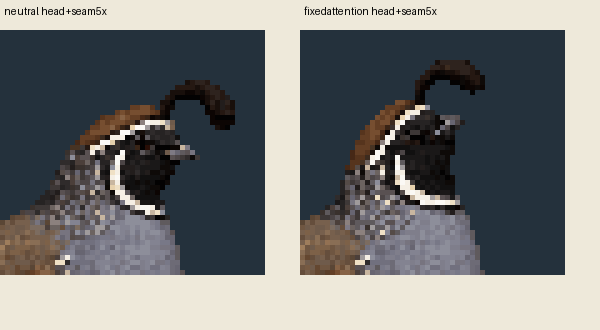

One preregistered ownership contour, one deterministic export, zero native calls. Actual native head/plume/upperneck pixels are reused from old lookV1. Body, wings, tail, legs and feet outside the contour retain exact neutral pixels. No pose fit, recolor, requantization, hidden underpaint or body bob. This is source-only authored construction with unreviewed seam/identity usefulness.
| Surface | Exact neutral | Old whole-lookV1 control | Fixed-body attention episode |
|---|---|---|---|
| Light | |||
| Dark |
Each full stage is237CSS/world pixels at density1; ancestral native extent236.307692 is preserved in the prior sampling, with its transparent ceiling margin. Current packet uses exact existing codec samples, cropped95×100 at fullstage90,92 and pivot50,93. Full image-root140,185 is an image anchor; contacts[]/supportWorldnull. No currentMac/runtime/fullcommonfamily admission is claimed. Player is one-shot, neutral return at78, terminal89 held to3seconds.

